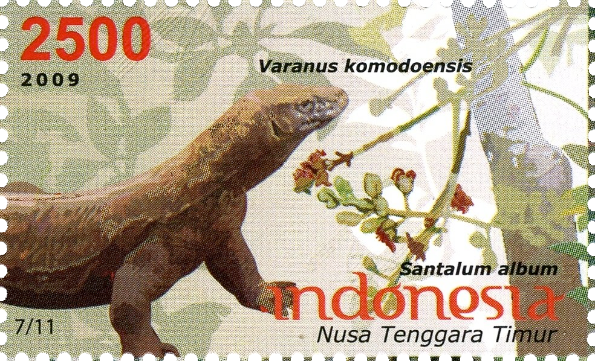
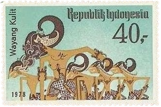
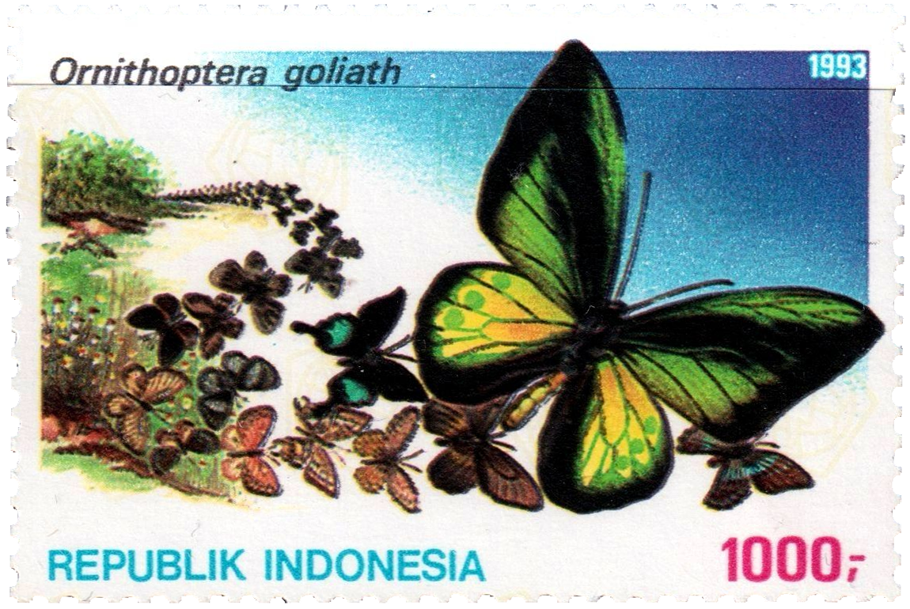
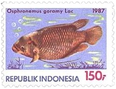
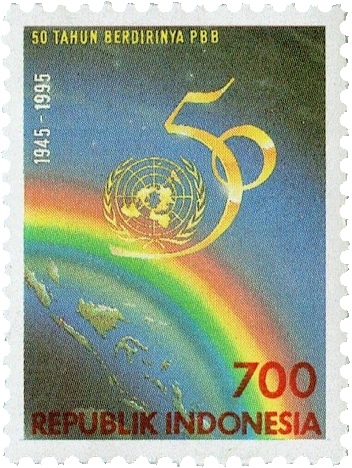
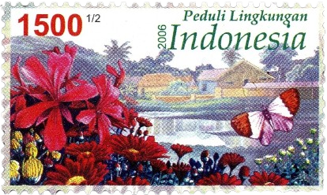
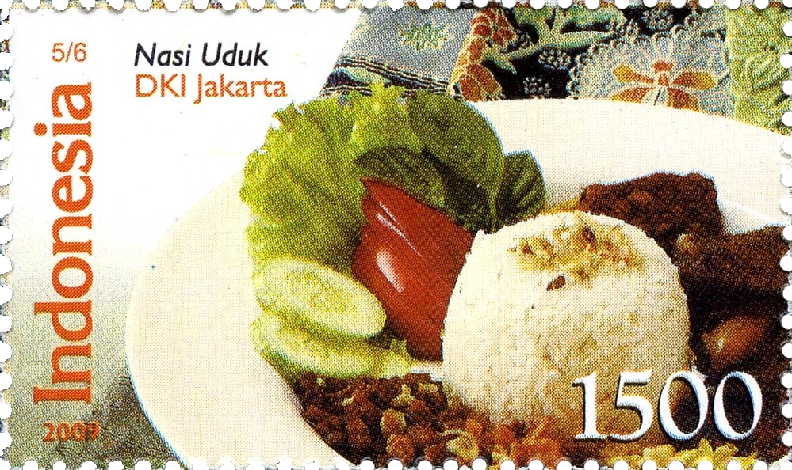
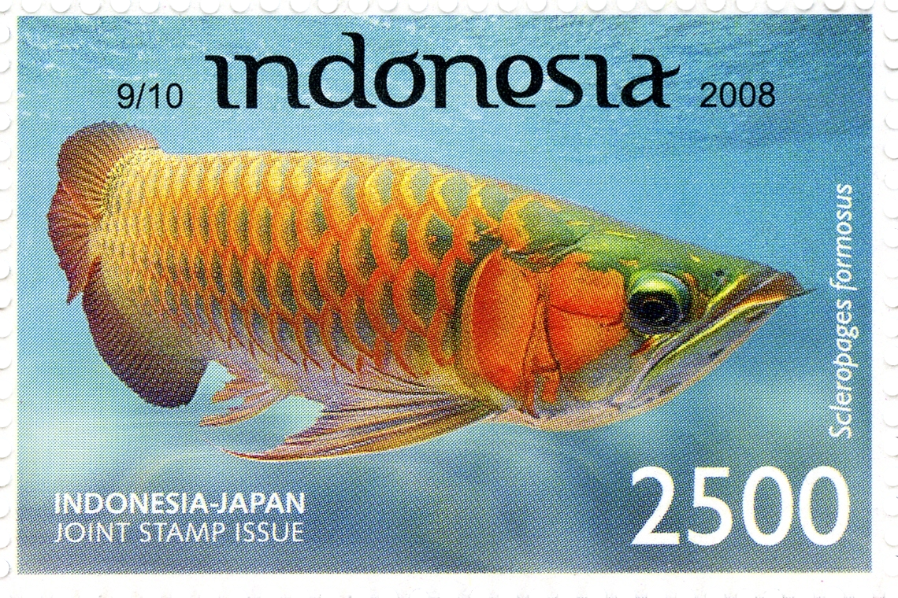
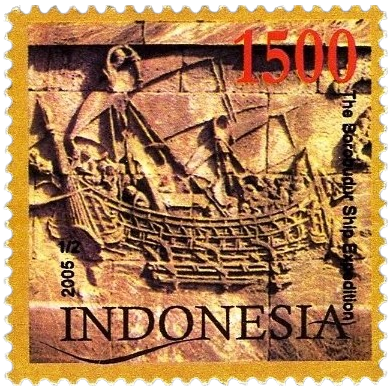

—————————————————— FRIENDS AND OTHER'S SITES ——————————————————


 ENG —————————————— Hello! My name is Tjo. I’m born and raised in Jakarta, Indonesia. I like sunshine, my favorite fruit is apples and my favorite animals are fish and sheep. Welcome to my website! Have you signed my guestbook yet? I have been drawing since I was a little kid. Almost twenty years later I'm still drawing. My files are all over the place, so I made this site as an archive for everything I have drawn since 2020. Mainly for my own convenience, but I invite you to look at what I have drawn in hopes you would enjoy them too. If you like my art, you can consider buying things from my shop or donating to me as support! Unfortunately, I can't find art from before 2020 (and that's why I'm making the effort to save my art properly now). Despite that, please enjoy the ones that are already in my gallery tab. If you think other people would also enjoy my drawings, I would love if you shared my site with them! If you would like to see more of my art, please consider becoming a member on my Patreon! You can find drawings and doodles there that I don't share anywhere else. You can also suggest me things to draw. I will be very grateful for the support as it helps me continue doing what I love! If you have any inquiries, or want to have a small chat, shoot me an email! |
 IDN —————————————————————————— Halo! Namaku Tjo. Saya lahir besar di Jakarta. Saya suka sinar matahari, buah kesukaanku apel dan binatang kesukaanku domba dan ikan. Selamat datang di situsku! Dah tanda tangan buku tamunya blom? Saya gambar sudah hampir dua puluh tahun, sejak anak kecil, sampe skrng masih gambar. Berkas2 sy berantakan, jadi sy membuat situs ini sebagai arsip untuk semua yg sudah digambar sejak 2020. Awalnya bikin situs ini buat kenyamanan sendiri, tapi saya mempersilahkan semuanya melihat apa yg sy sudah buat. Jika anda suka sama karyaku, bisa beli pernak pernik dari tokoku atau donasi di sini sebagai pendukungan! Sayangnya sy kehilangan semua gambar yg dibuat sebelom 2020, jadi itu alasan kenapa skrng sy berusaha lebih keras simpan semua gambar secara teratur. Meskipun begitu, sy berharap anda masih bisa menikmati semuanya yg dah ku simpan dalam hal galeri. Jika anda pikir ada orang kenalan yg bakal suka sama karyaku, saya bakal sangat senang jika anda bagikan situs ini ke mereka! Jika anda mau lihat lebih banyak karya seniku, boleh gabung di Patreonku! Di sini bisa temu banyak gambar yg sy nggak bagi ke tempat lain. Bisa juga kasih saran hal apa yg mau sy gambarin. Saya berterima kasih atas dukunganmu!  Jika ada pertanyaan apapun, atau mau ngobrol saja, kirim saya email! |

TOOLS | Clip Studio Paint EX + Huion Inspiroy H950P. Untuk mengedit pake Photopea (gratis!). Untuk pixelart pake Aseprite. Gambar dikertas pake Energel atau Sakura Micron.
BRUSHES | Paling sering pake untuk lineart adalah bijobiyo letter pen dan knucklehead, untuk warnain cuma pake paintbucket atau ayamtepung.
SOCIALS | Tumblr + Bluesky + Twitter —————————————————————————————————————
—————————————————— FRIENDS AND OTHER'S SITES ——————————————————